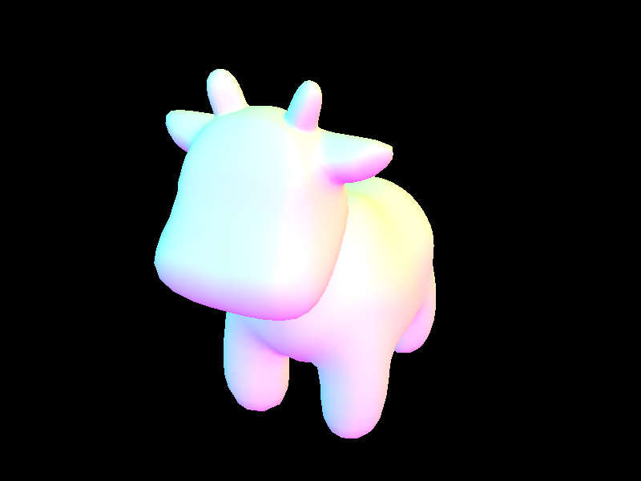
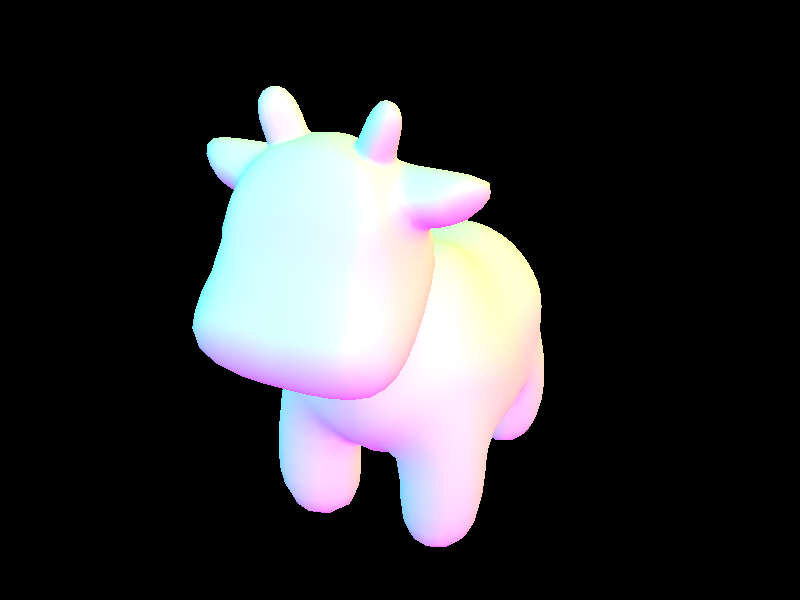
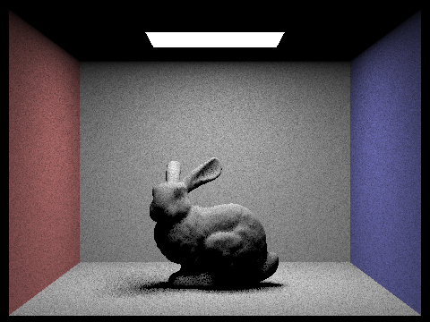
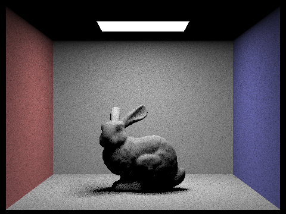

Ray Generation and Intersection
Rays are generated from a single constant point, which is the light source. The rays are directed from the light source toward pixel positions on viewing window. The rays are interpreted as representations of the light being cast from the light source. If the rays are interpreted using Photometry, irradiance (How much power is falling onto a surface) can be calculated. By checking the order of objects intersected by the ray, it is also possible to cast shadows.
Triangle Intersection
In order to test if a ray intersected a triangle, I used the Möller-Trumbore algorithm. This algorithm converts the intersection point on the same plane as the triangle into barycentric coordinates. By setting the barycentric coordinates equal to the ray's parametric equation, the equation can be rearranged to a row-column vector multiplication to find the depth of the ray at the point of intersection as well as two of the 3 barycentric weights.
 



 
